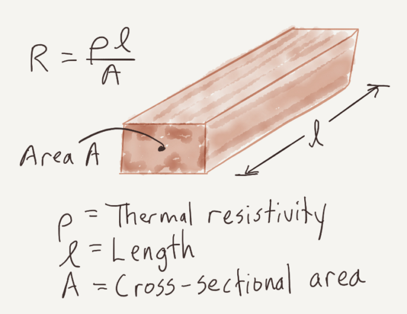
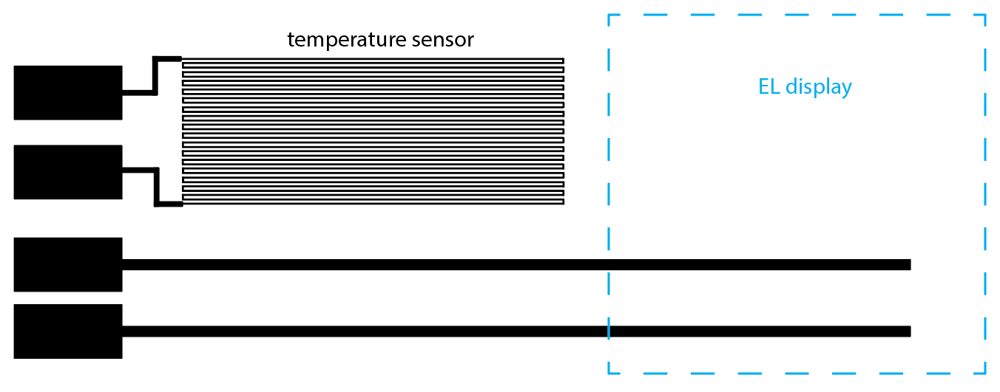

6.810 Engineering Interactive Technologies (fall 2021)
Controlling Electroluminescent Displays
In the next two labs, we will build an interactive mug. It can sense its own temperature and display how hot it is with an electroluminescent display.
In this lab, you will make the display yourself from scratch using airbrushing.
Next lab, you will inkjet print the remaining circuit and assemble the remaining parts of the design.
Deliverables Lab 3 (due Friday, Sept. 25, 2020, 11.59pm)
At the end of Lab 6, upload to your student google drive:
- the Arduino code (.ino) for dimming your display
- 2-3 photos (.jpg or .png) from different angles of your circuit
- a short video (.mov or .mp4, max. 1 minute) showing how you display dims and performs a full cycle from bright to dark and dark to bright again
Your Task for Lab 6:
Fabrication and Control of Electroluminescent Displays
In lab 3, we will fabricate an electroluminescent display and build the controller circuit to turn it on and off.
Recall from the 'display' lecture that electroluminescent displays consist of 4 layers: two conductive layers that sandwich the light emitting phosphor layer and the dieletric layer. The top conductive layer is a silver or copper layer. The bottom conductive layer is transparent (ITO on transparent PET) otherwise you wouldn't be able to see the phosphor glow. To avoid shorts, the insulating dielectric layer prevents the two conductive layers from touching. And once you apply an AC on the two conductive layers, the resulting electric field between them will excite the phosphor and make it glow.
Everyone Continue Here: Powering Your EL Display
You can come and pick-up your display any time after wednedsay 7pm or on the following days, you do not have to wait until office hour.
EL displays require an alternating current between the two elecrodes to excite the phosphor and make it light up.
Therefore, just connecting it to a DC power supply, like the 3.3V DC from your ESP32, won't do the trick.
We therefore use an inverter to generate AC current from DC.
In this tutorial, we will generate 50V AC from a 1.2V AA battery using our inverter.
50V AC is the maximum allowed voltage for class activities.
You are not allowed to use the inverter with anything else than the 1.2V AA battery we provided for you.
Our 50V AC are low current and not really dangerous, but you might feel a little sensation at the tips of your fingers when touching the circuit. Therefore, never plug the display in while you are working on the circuit and you are touching the wires!

While building your circuit, you must adhere to the following rules:
- never touch the display or any part of the circuit while the battery is plugged in, i.e. the circuit is powered
- unplug the battery before you do any wiring, only after it is unplugged you are allowed to touch the circuit and exchange wires and components
- once you are done wiring and you have made sure you are not touching any part of the circuit anymore, plug the battery back in
Connecting Inverter Output to Display
Before you do anything, remove the battery from your battery holder to remove all power from the circuit.
Next, connect the inverter 'output' (50V AC) to the display.
As you can see in the image above, the inverter output are the two black wires from the inverter.
Connect jumper wires to each inverter output cable by sticking them into the white connector of the inverter.
Connecting to the bottom side of the display (copper layer with copper tape flap): Next, use crocodile clamps to connect the first inverter output to the copper side of the display. Connect one end of the crocodile clamp to the jumper wire. The other end of the crocodile clamp goes onto the little copper flap. Be careful that you don't rip of the copper flap while working with the wires.
Connecting to the top side of the display (ITO with copper tape): Next, use crocodile clamps to connect the other inverter output to the front of the display. Connect one end of the crocodile clamp to the jumper wire. The other end of the crocodile clamp goes onto the ITO sheet where we have the copper tape. Be careful that you don't rip of the copper flap while working with the wires.

Connecting Inverter Input to Battery
Next, connect the inverter input to the 1.2V battery holder (make sure your battery is still removed, never wire while we have power on).
The inverter input is the black/red cable, see image above.
To connect to the inverter, use jumper wires again and stick them into the white connector element.
Next, use a crocodile clamp to connect the red wire to the + pol of your battery holder and another crocodile clamp to connect black to -.
Powering up the Display
Once you are done wiring, turn the display around such that you see the top side.
The copper should be on the bottom now and you can't see it anymore.
When this is done, make sure you are not touching the circuit anymore at any place.
Then insert the AA battery into the battery holder.
You should see a bright EL display in the shape of the coffee mug now.
If you see that, congratulations.
If not, remove the battery, then check if all wires are connected properly, and try again.
If it still does not work, ask for some help from the TAs.

Building the control circuit for EL Displays
Now you can turn on/off your display by plugging and unplugging the battery.
That's ok but it would be nicer to do this via code and not by physically plugging/unplugging the battery.
The goal of this final part of the lab is to build a control circuit that lets you do exactly this.
Switch to Turn On/Off Display
To turn on/off the display via code, we need an switch.
In our case, since we use AC not DC, we need an AC switch.
The ESP32 microcontroller does not have a suitable AC switch built-in. Thus, we have to build our own.
Our switch will consist of a triac and an optocoupler.
A triac is similar to a transistor but also blocks alternating current (AC) while a transistor can only block direct current (DC). By switching the triac on/off, we can thus block the AC current coming from the power supply (i.e. our battery), which allows us to turn the display on/off under computer control. The triac's pins and how you add it to a circuit is similar to a transistor. It has two connectors for + and GND and a Gate that can trigger it to let current pass through or block it. The symbol and a picture of the triac that we will use in this lab are below:


Isolating the Microcontroller Control Circuit from the Power Circuit
The ESP32 is rated only up to 12V so a higher voltage like the 50V AC we use could potentially damage the microcontroller's components. Therefore, we have to isolate the ESP32 from the 50V AC power supply. For this purpose, we will use an optocoupler, which uses optical signaling rather than electrical signaling, which allows it to isolate each part of the circuit while still enabling communication between the two. An optocoupler houses an LED and a photo-triac. When the LED turns on, it activates the photo-triac and energy then flows. Both components are optically connected but not electronically connected through a wire. The trigger mechanism works purely through light. This safety measurement ensures that no voltage of the 50V power supply can jump over to the microcontroller. You can see how the symbol and the component looks like:


We will setup the components to work together in the following way:
(1) the ESP32 controls the optocoupler and thereby protects itself from any high voltage.
(2) The optocoupler then controls the triac to open and close the AC switch to let power through or cut if off.
We have to add a few resistors to the circuit. First, these resistors limit the current that reaches the optocoupler's LED and prevents it from blowing up.
In addition, it limits the current that reaches the triac to prevent it from being damaged. The final circuit looks like this:
Bringing it all together, our AC switch circuit should look like this:

Get yourself a breadboard, wires and the components and build it.
Note that the optocoupler has to be plugged in in a specific orientation. Look at the datasheet of the optocoupler here to find out where the pins are.
The little dot on its top indicates the top left corner of the component.
Write a Program to turn the Display On/Off
Now that we have wired up our control circuit, we still have to write the code for it.
As an example, we will write a script that lets the display blink.
This is very simple with the circuit you already built.
Check again, to which pin you connected the optocoupler and use this pin to turn it on and off.
Write a Program to Dim the Display
Finally, we want to not just turn the display on/off but also set the displays brightness (e.g. dimming it down).
In 6.08 (pre-requisit for this class), you already learned about pulse-width-modulation (PWM) to dim light sources like an LED.
Duty Cycle: When you create a PWM signal it means that you turn on and off a signal for a certain duty cycle.
The longer the signal is turned on in one duty cycle the brighter the light source will be (see Figure below).
Similarly, the longer the signal is turned off in one duty cycle the darker the light source will be.
Thus, a duty cycle of 25% results in a darker display than a duty cycle of 75%.

Frequency: So how is the duty cycle related to the frequency? The duty cycle only tells you the percentage the signal is on/off within a cycle (e.g., 25%). It does not say how long a cycle is. For this, you need to define the frequency. A higher frequency results in a shorter overall cycle (not affecting the percentage the signal is on/off) than a lower frequency as you can see below.
What frequency should the PWM signal have?
If the frequency is very high and thus the duty cycle is compressed into a short time window, the turning on and off of the signal (i.e. the display) happens very fast.
If it is fast enough, humans do not notice that the display is turned on and off, which is great because we can use the on/off mechanism to create different brightness level without the user noticing that we are effectively just turning the display on/off at a very fast rate.
The frequency should thus be high enough that the duty cycles are not visible to the human eye.
But can the frequency be arbitrary high?
It turns out, the answer is no.
Why can the frequency not be arbitrarily high?
Before we can answer this question, it is important to realize that in our circuit, we are dealing with two different signals.
One signal is coming in the form of the AC signal from our inverter.
The other signal is coming in the form of the PWM signal from our ESP.
The frequency of the inverter's AC signal is given at 800Hz for our 1.2V battery.
The frequency of the PWM signal is something we can choose as mentioned above.

So why can the frequency of the PWM signal not be arbitrarily high?
The reason for this is something called 'zero crossing'.
What is a zero-crossing?
A zero-crossing is when the AC signal crosses the x-axis as shown in the image below.
When you check out the optocoupler's datasheet, you will see that it contains a "zero-crossing circuit".
What this means is that the optocoupler will only switch the display on/off when the AC signal of the inverter crosses zero and the PWM signal tells the optocoupler to change the display state.
So what happens if your PWM frequency is higher than your inverter frequency?
The image below shows this: Although the PWM frequency demands that the display be switched off/on, the optocoupler will do nothing since there is no zero-crossing in that time frame.
Thus, if our PWM signal is faster than the inverter's AC frequency, the optocoupler switch cannot react fast enough.
As a result, the optocoupler switch will react at some random point in time later, which disrupts the chosen duty cycle and makes it longer or shorter. Since the duty cycle is not consistent anymore, you will see the display flicker since it goes into random brightness states.
Now let's look at the same scenario when the PWM frequency is lower than the inverter frequency.
This will work well as you can see in the image below.
When the PWM frequency demands the display to be switched off/on, there are several zero-crossings where the optocoupler can take action.
Thus, we have to select a PWM frequency that is significantly lower than the AC power supply frequency.
To be significantly below the inverter's AC frequency, we should set the PWM signal to around 100Hz to get a good result in our dimming.
Setting the PWM frequency:
You can set the PWM frequency using the ledcSetup command.
ledcSetup(ledChannel, freq, duty_resolution);
Channel Number: The LEDC peripheral has 16 channels which can generate independent waveforms (note that these are NOT pin numbers on the ESP, but internal channels inside the ESP). The channel numbers range from 0-15. For our purposes, you can pick any channel you like.
Frequency: As mentioned previously, the frequency should be 100.
Duty resolution: The duty resolution is expressed in bits and determines how many different duty cycles we can choose from, i.e. how many different brightness options we will have when dimming the display. For instance, 3 bits gives us 8 different cycles to choose from (12.5%, 25%, 37.5%,... 100%).
Specifying the Output Pin of the PWM Signal
Now that you specified the signal, you need to specify on which pin number the signal should appear. Remember that this is the pin that goes from the ESP to the display control circuit. The PWM channel number is the same as above.
ledcAttachPin(GPIO_PIN, channel_number)
Generating the PWM Signal on the Output Pin
Finally, you need to generate the actual PWM signal, which you had previously defined with the ledcSetup() function.
ledcWrite(channel_number, duty_cycle):
The PWM channel number is the same as above.
The duty cycle is different from the duty resolution and explained below:
Duty Cycle: In the duty cycle parameter, you tell the ledcWrite() function, which of the duty cycles from your duty resolution should be used. Since we chose 3 bits, which gives us 8 values ranging from 12.5%, 25%, 37.5% .... 100%, then our duty cycle parameter is the index of the duty cycle you want to use. For instance, using 2 for the duty cycle parameter would give you 37.5% for the duty cycle.
Use PWM to let the display increase and decrease in brightness. The increase from 0% to 100% duty cycle should take 2 seconds and then dim it down again in another 2 seconds. Finally, let the display repeat this dimming infinitely.
(1) Designing the inkjet printed temperature sensor
First, you will use conductive inkjet printing to make your own temperature sensor from scratch.
Why can conductive wires be used to sense temperature?
Conductive wires can be used to sense temperature by making use of a material property that most conductive metals share: Their resistance changes with changes in temperature. This property is called thermal resistivity p and is shown in the formula for determining the overall resistance of a wire below. As you can see, given a wire with a fixed length l and cross section A, the higher the thermal resistivity the higher the overall resistance. For our silver, the thermal resistivity p increases with increasing temperature. Thus, the higher the temperature, the higher the thermal resistivity and the higher the overall resistance of our wire. Thus, by reading the overall resistance of the wire with our microcontroller, we can determine the mug's temperature.

How high should the resistance of the wire be to work as a reliable temperature sensor?
The higher the resistance of the conductive wire, the more sensitive it will be to temperature changes.
Consider the following, if you have a small resistor (e.g., 50Ohm) and the resistance changes a little bit (e.g. 5%), the change will be very small (i.e., 5% of 50Ohm = 2.5Ohm). This is difficult to measure since there is always a bit of noise in electronics. In contrast, if you use a large resistor (e.g., 1kOhm), the change will be larger (i.e., 5% of 1,000 Ohm = 50Ohm). Therefore, our ideal temperature sensor should be a wire with high resistance. We choose 1kOhm since that gives us a pretty high sensitivity, but you could also go higher.
How can we create a conductive wire with high resistance?
If you look again at the image above, you can see that the resistance of a conductive wire is determined by its cross-section A and its length l. Note that when we talk about the cross-section A in our example here, we mean the width of the wire since the height will be the same for all our prints.
To create a high resistance wire, should the cross-section A be larger or smaller?
To create a high resistance wire, should the length of the wire l be longer or shorter?
Look at the formula in the image.
To create a high resistance wire, the cross-section A (width of the wire) should be as small as possible.
To create a high resistance wire, the length of the wire should be as long as possible.
How thin and how long should the wire be?
As you just figured out, the thinner and longer the conductive wire the higher the resistance.
Thickness: Since long wires take up space on our prototype, we should first try to minimize the thickness to increase the resistance. We ran a few experiments and found that the thinnest trace we can print is 0.3mm wide. Any thinner than this and the silver does not connect reliably anymore.
Resistance of a 1cm long trace: So now that we know the smallest thickness is 0.3mm wide, how much resistance does a wire like that have? To determine this, we printed a trace of 0.3mm width and 1cm length and found that its resistance was 7.5 Ohm/cm at room temperature.
Note that this can vary depending on the substrate, the 2D printer, and the silver ink mixture, so if you change any of these you would have to remeasure the resistance.
Required Length of the wire for 1kOhm? Assuming that the thermal resistivity p and the height of the trace is constant, how long does your conductive wire have to be to have 1kOhm resistance?
Remember that the thermal resistance p at room temperature 20C for a 0.3mm cross-section wire is p(20C) = 7.5Ohm/cm.
We can therefore estimate the resistance of a trace of length l at room temperature by calculating
resistance = l * p(20C) = l * 7.5 Ohm/cm
Shaping a long conductive wire into a compact form factor:
Now that we know how long the wire has to be, the next question that arises is how to best shape it to take up minimal space on our design? A classic method to create a long wire on a small area is to design it in a horse shoe pattern similar to this:
Write Processing Script to generate line layout:
Since drawing this manually is quite the pain, we instead want to leverage our computational design capabilities in Processing. Write a Processing Script that generates a temperature sensor layout of variable length depending on a desired overall resistance. Reuse your code from pset1 to write this script.
The Processing script should have the following features:
- user input elements for line thickness (default: 0.3mm), overall resistance, and overall width of temperature sensor (default: 7cm)
- generate a set of horizontal lines of the given thickness and connect them with vertical lines on alternating sides, the distance between each horizontal trace should be 0.5mm
- output a .pdf that contains the temperature sensor
Once you exported your pdf, you are ready to move onto the next step.
(2) Extend Temperature Sensor Circuit with Wires
that Connect to EL display
Now that we have our temperature sensor, it's time to plan how it will connect to the EL display so we can create the overall circuit layout that we want to attach to the mug.
Open your temperature sensor in Adobe Illustrator to extend it with the remaining circuit.
Below, you see an image of the mug for reference.
And further below you see an image of the overall circuit layout that fits onto the mug and has all the elements you need for the circuit.

For your drawn circuit, aim for a total size aim of 17cm width and 7.5cm height so that the final design will fit nicely on the mug.
Your drawn circuit needs to include:
- the imported temperature sensor placed near the mug's handle
- your sprayed EL display on the opposite side of the handle (nothing you need to draw here, just make sure you plan for the space, i.e. there should be no overlap with the temperature sensor)
- 4 connector pads to connect your microcontroller to the mug's circuit (each size: 3cmx1cm), i.e. two will be used to connect to the temperature sensor, the other two to the EL display
- 2 printed wires that connect the connector pads to the temperature sensor (wire thickness: 1mm)
- 2 printed wires that connect the connector pads to the EL display (wire thickness: 2mm, with a distance of a least 3cm between them at the location where they connect to the EL display to avoid short circuits). Note that the location of these wires depends on where you put the copper flap and copper strip onto your sprayed EL display. If they are not at the bottom of the display but instead at the top, you need to route one of the wires above the temperature sensors.
Deliverables Lab 3 (due Friday, Sept. 25, 2020, 11.59pm)
At the end of Lab 3, upload to your student google drive:
- the Arduino code (.ino) for dimming your display
- 2-3 photos (.jpg or .png) from different angles of your circuit
- a short video (.mov or .mp4, max. 1 minute) showing how you display dims and performs a full cycle from bright to dark and dark to bright again
Fabrication and Control of Electroluminescent Displays
that Connect to EL display